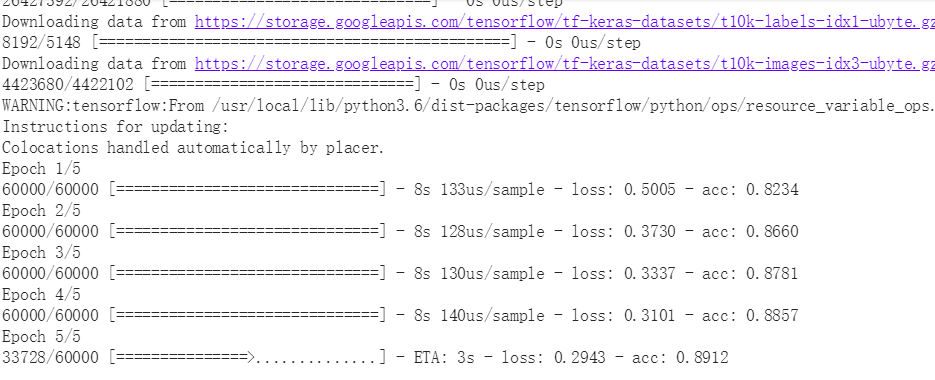
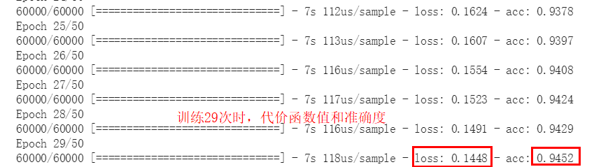
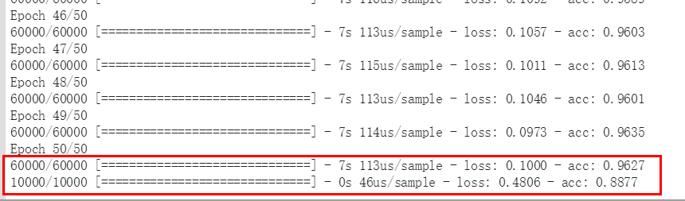

[Tensorflow2.0] 计算机视觉入门 - Fashion Mnist

文章目录
摘要： 机器学习是基于统计学和物理模型的方法，计算机视觉则是具体的一个研究领域，这个领域会用到机器学习的方法来解决问题；而人工智能是一个更大的范畴。本文使用Tensorflow 2.0建立模型在Fashion mnist数据集上训练和测试，模型取得了较高的准确性。作为计算机视觉领域的入门课程，通过该实验，希望给感兴趣的朋友心里种下一颗种子。
计算机视觉
定义
计算机视觉（Computer Vision, CV）是一门研究如何使机器“看”的科学，更进一步的说，就是指用摄影机和计算机代替人眼对目标进行识别、跟踪和测量等机器视觉，并进一步做图像处理，用计算机处理成为更适合人眼观察或传送给仪器检测的图像。–来自维基百科
计算机视觉就是研究如何让计算机具备人类的眼睛的功能，能够快速的接收和识别事物。
关系
机器学习是基于统计学和物理模型的方法，计算机视觉则是具体的一个研究领域，这个领域会用到机器学习的方法来解决问题；而人工智能是一个更大的范畴。 深度学习：一种实现机器学习的技术。
应用前景
- 过程控制（例如工业机器人和无人驾驶汽车）
- 事件监测（例如图像监测）
- 信息组织（例如图像数据库和图像序列的索引创建）
- 物体与环境建模（例如工业检查，医学图像分析和拓扑建模）
- 交感互动（例如人机互动的输入设备）
Fashion Mnist 数据集
该数据集是由Zalando（一家德国的时尚科技公司）旗下的研究部门提供，是Mnist数据集(大量的手写数字)的升级版。其涵盖了来自10种类别的共7万个不同商品的正面图片。Fashion-MNIST的大小、格式和训练集/测试集划分与原始的MNIST完全一致。60000/10000的训练测试数据划分，28x28的灰度图片。可以直接用它来测试你的机器学习和深度学习算法性能，达到学习的目的。
理解训练数据
fashion mnist数据集中，种类一共有10种，也就是10种标签（label），分别是10种衣服的名称，为了更好地表达这些数据，使用数字0-9来分别代表每一种类。这样做的好处就是既能让数值参与运算，又保证了标签值与种类的一一对应。
(data, label) 常见的训练数据格式，模型通过被喂入此类数据来进行学习。
本数据集中将数据分为训练集(train_set)和测试集(test_set), 它们分别是60000个和10000个，经过训练和测试的模型，如果准确性或精确度很高的话，如99%，同时，损失（loss或cost）很小的话, 那么该模型就可以去预测未知的数据了。
一般来说，如果你的模型在fashion mnist标准的实验数据集中表现都不好，那就基本上不用去实践中了，因此该类数据集也是大家积极检验自己模型的数据源。
标签种类（label）
0 T-shirt/top（T恤） 1 Trouser（裤子） 2 Pullover（套衫） 3 Dress（裙子） 4 Coat（外套） 5 Sandal（凉鞋） 6 Shirt（汗衫） 7 Sneaker（运动鞋） 8 Bag（包） 9 Ankle boot（踝靴）
训练与测试
|
|
结果
经过5次的全集数据训练，模型acc得到了0.8905，即89%的精确度，代价函数loss值为0.29，作为第一个神经网络的训练结果来看，It’s really not bad。也就是说，如果让该模型去预测新的同样的图片时，他回答的准确性接近90%。
同时，测试结果表示精确度有86%，代价函数值稍微高于训练时，为0.3597。
思考
如何提高上述的精确度或者叫准确性呢？ 是不是可以加大训练的次数，让模型继续去拟合训练集，将epochs加到50？结果会如何？
以下是当设置epcohs=50时的训练结果，其他参数不变。
结论
通过上述结果对比，我们看以看出，当epcohs=50时，其准确度（accuracy, acc）较之前确实提高了，而且代价函数值（也叫损失函数，loss或cost）还下降了。先不要着急高兴，更不能着急去开庆功宴。
但是，在测试集里，我们刚才经过50遍的全集训练的模型，其loss反而增大了，acc也有所下降了。也就是说，模型训练时表现较好，但进入新的数据集效果却有所下降，这表示，我们的模型在训练时，出现了过拟合（over-fitting）。在新的数据集去工作时（即泛化，Generalization），会让人大跌眼镜的。
后面我将会加入卷积网络层来改善模型的准确度。
计算过程附图
epoch=5时，训练结果截图

epoch=29时，训练过程截图

epoch=50时，训练完成后截图

文章作者 海萨
上次更新 2019-05-05
许可协议 MIT